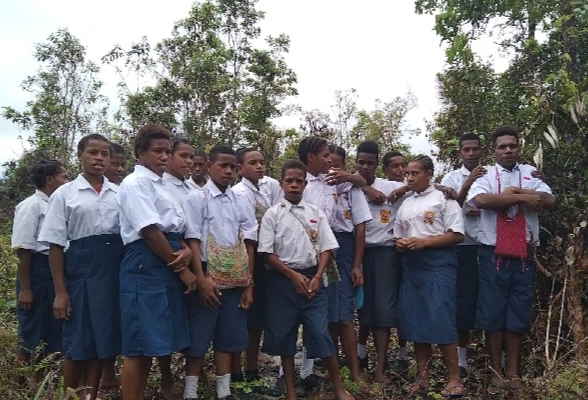
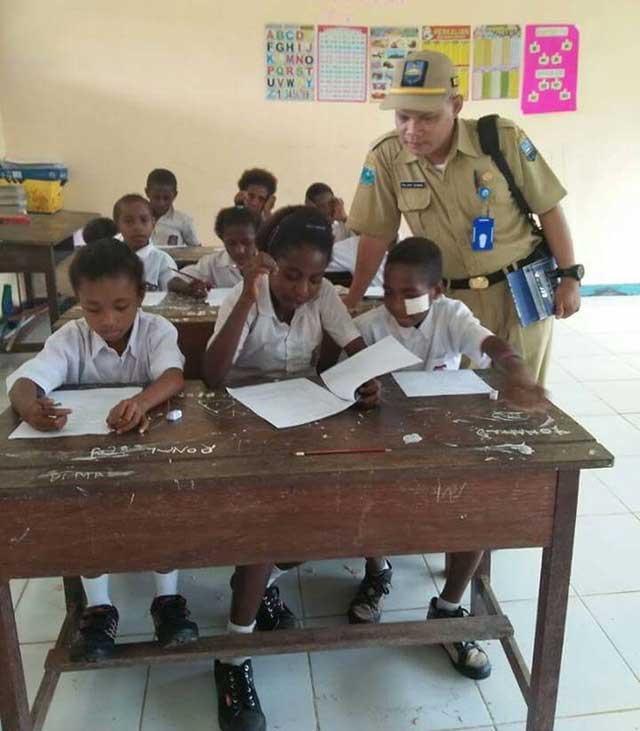

Sekolah, seperti semua institusi, memiliki kekurangan atau tantangan yang sering dihadapi. Kekurangan ini bisa beragam,
mulai dari infrastruktur yang kurang memadai hingga masalah yang lebih luas seperti ketimpangan akses pendidikan,
kualitas guru, dan relevansi kurikulum.
Fasilitas Sekolah
Website resmi sekolah untuk informasi akademik, kegiatan, dan layanan pendidikan.
Sekolah, seperti semua institusi, memiliki kekurangan atau tantangan yang sering dihadapi. Kekurangan ini bisa beragam, mulai dari infrastruktur yang kurang memadai hingga masalah yang lebih luas seperti ketimpangan akses pendidikan, kualitas guru, dan relevansi kurikulum.
Kekurangan Yang Dialami.

Kelebihan Yang Dialami.

Sekolah, seperti semua institusi, memiliki kekurangan atau tantangan yang sering dihadapi. Kekurangan ini bisa beragam,
mulai dari infrastruktur yang kurang memadai hingga masalah yang lebih luas seperti ketimpangan akses pendidikan, kualitas guru, dan relevansi kurikulum.
mulai dari infrastruktur yang kurang memadai hingga masalah yang lebih luas seperti ketimpangan akses pendidikan, kualitas guru, dan relevansi kurikulum.
Fasilitas
Fasilitas SMP NEGERI 4 PIRIME meliputi ruang kelas nyaman ber-AC, perpustakaan lengkap, laboratorium IPA dan komputer, lapangan olahraga, serta kantin sehat.